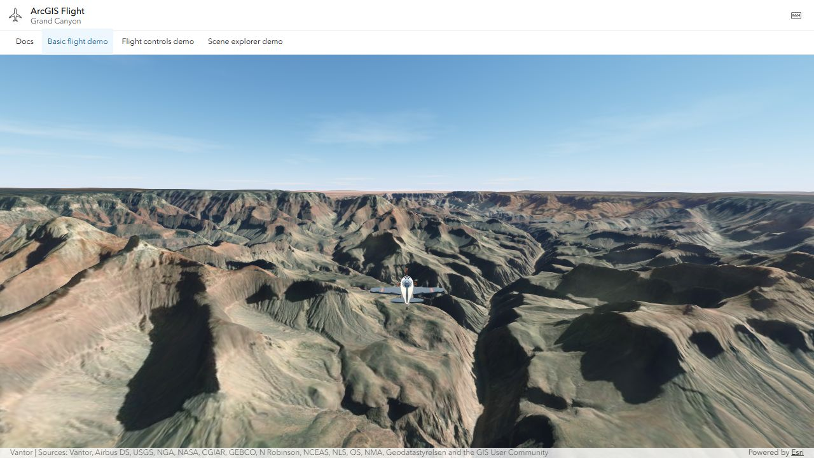

ArcGIS Flight Component#
An open-source web component that integrates with the ArcGIS Maps SDK for JavaScript to add flight controls and a camera-following aircraft to 3D scenes.
Made with assistance from ChatGPT and Claude. This is a for-fun project I work on in my free time to learn about AI agent-assisted development. It is not an official Esri project. It works, though it could be better. If you spot something to improve, please open an issue.
A small open-source project for flying around ArcGIS 3D scenes. Pick a place, steer with a keyboard or gamepad, and see the map from a different angle.
On mobile, a joystick appears at the bottom left. Drag the scene to look around the plane, then release to return to the normal chase view.
The flight component plugs into your existing SceneView or <arcgis-scene>.
Your application loads the map and data; the component adds the aircraft,
controls, and camera. It works with scenes and services from ArcGIS Online
and ArcGIS Enterprise, and you can bring your own aircraft model.
Still a work in progress, so the API may change before a stable release.
Use the component in your app, or take the source and change it for your own ideas.
Documentation | Getting started

Demos#
| Demo | What it shows |
|---|---|
| Basic flight | A minimal scene with a flyable aircraft. |
| Flight controls | Fly over Geneva with SITG imagery, terrain, and 3D buildings while using speed, pause, camera, and recovery controls. |
| Scene explorer | Choose a place, search an address, or load a public WebScene. |
| Other aircraft | Four aircraft, Esri 3D Buildings, weather and time, camera controls, and picture capture. |
| Zurich local scene | A local Swiss LV95 WebScene (EPSG:2056) with 3D buildings. |
Start with Basic flight for a quick trip toward the Matterhorn, or open Scene explorer to choose somewhere else. If the scenery is struggling to keep up, slow down and give the 3D data time to load.
Add it to your application#
To add flight to a bundled ArcGIS app using SDK 5.1, install from GitHub:
npm install github:ceddc/arcgis-flight-component @arcgis/core@~5.1.24 @arcgis/map-components@~5.1.24
Import the components in your browser entry point:
import "@arcgis/map-components/components/arcgis-scene";
import "@ceddc/arcgis-flight-component";
Add a scene and the flight component:
<style>
html, body, arcgis-scene { width: 100%; height: 100%; margin: 0; }
arcgis-scene { display: block; }
</style>
<arcgis-scene id="scene" item-id="YOUR_PUBLIC_WEBSCENE_ITEM_ID"></arcgis-scene>
<arcgis-plane-navigation reference-element="scene"></arcgis-plane-navigation>
Flight starts when the scene is ready. For an existing SceneView, custom
settings, and cleanup, follow Getting started.
Make it your own#
Clone the repository to run the demos locally and change whatever you need:
git clone https://github.com/ceddc/arcgis-flight-component.git
cd arcgis-flight-component
npm ci
npm run dev
Open the local site and choose a demo from the menu. If that port is busy, use the address printed by Vite.
Start with a demo in demos/, or adapt the flight code in src/ for your own
project. Development
maps out the code and checks. To swap the model or change its handling, see
Custom aircraft.
ArcGIS Enterprise#
Load your Enterprise WebScene or service layers in your application, then connect the flight component to the view. See How to use ArcGIS Enterprise for a short setup example and authentication guidance. The Flight controls source shows direct connections to SITG imagery, terrain, and building services.
Documentation#
- Common changes - start position, camera, controls, and terrain.
- Custom aircraft - models, speeds, and handling.
- API reference - methods, events, and flight state.
- SDK integration - supported versions and loading options.
- Troubleshooting - setup and rendering issues.
Requirements#
Node.js 20+ for development, ArcGIS Maps SDK for JavaScript 4.30 through 5.1, and a browser with WebGL. The default import targets SDK 5.1; older supported SDKs use a matching package subpath. Scenes may use Web Mercator in global or local mode, or another local projected coordinate system with linear units (including metres, feet, and US survey feet). See local scene setup.
Attribution#
This project uses the ArcGIS Maps SDK for JavaScript and the Calcite Design System, both from Esri.
License#
Source code and bundled aircraft assets use the MIT License. You can use, modify, and share them; keep the copyright and license notice with copies or substantial portions of the code and assets you reuse. ArcGIS services and geographic data retain their own terms.